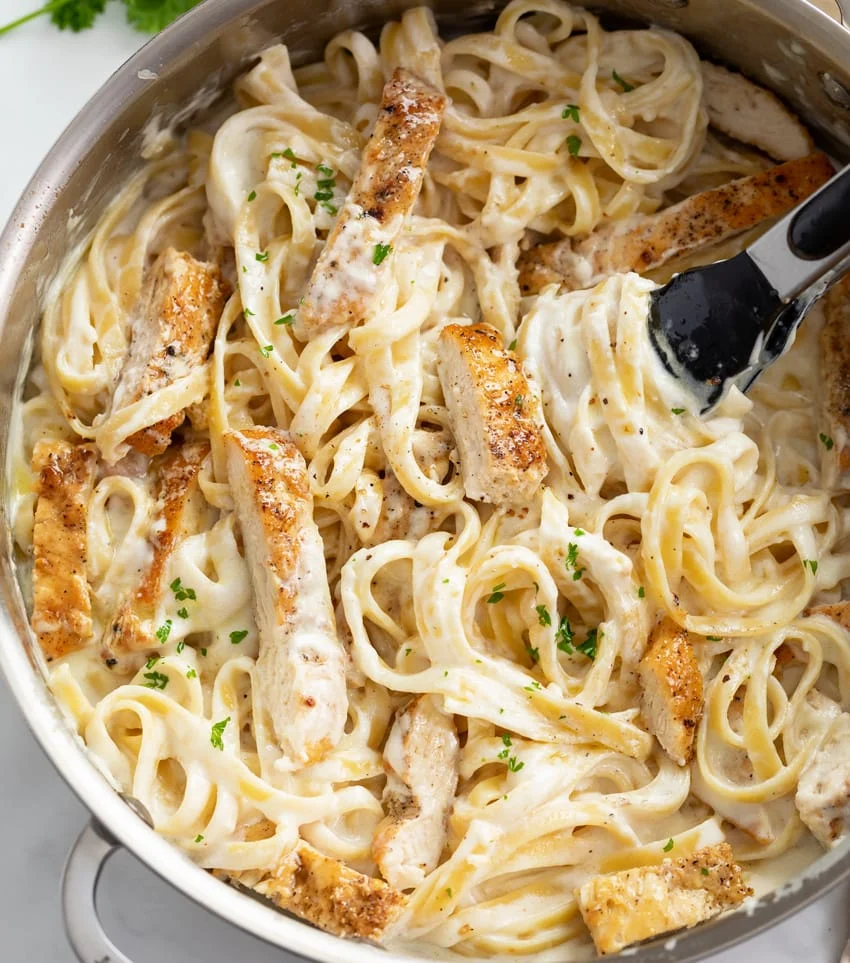

Chicken Alfredo

Description
A combination of broccoli, cut up chicken breast, and fettuccine noodles
mixed with creamy alfredo sauce, parmesan cheese, and basil to create a delicious mouth watering pasta.
Ingredients
- 8 ounces fettuccine or spaghetti noodles, uncooked
- 2 cups fresh broccoli florets
- 1 pound boneless skinless chicken breasts, cut into bite sized pieces
- 1 can of Prego Homestyle Alfredo sauce
- 1-2 bags of Kraft shredded parmesan cheese
Steps
- Cook pasta as directed on package,
adding broccoli to the boiling water for the last 2 min. of the pasta cooking time, Drain pasta mixture
- Cook chicken 5-10 minutes or until cooked thoroughly, stir occasionally
- Add alfredo sauce and basil to chicken, let it cook 2-5 minutes or until it's heated while stirring occasionally
- Turn off stove top and let the chicken alfredo heat cook
- Add in parmesan cheese while heat cooking and stir in the cheese
- Mix in chicken alfredo with noodles and broccoli
Return to Homepage